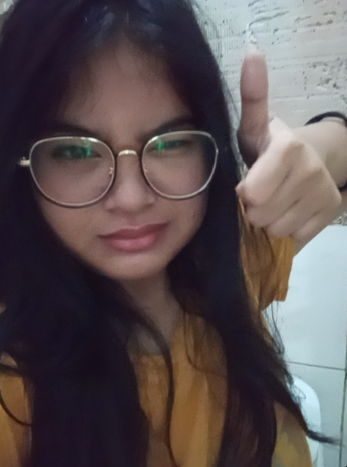
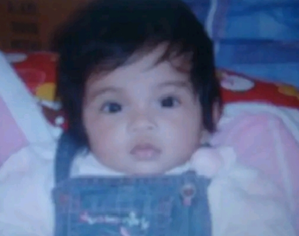
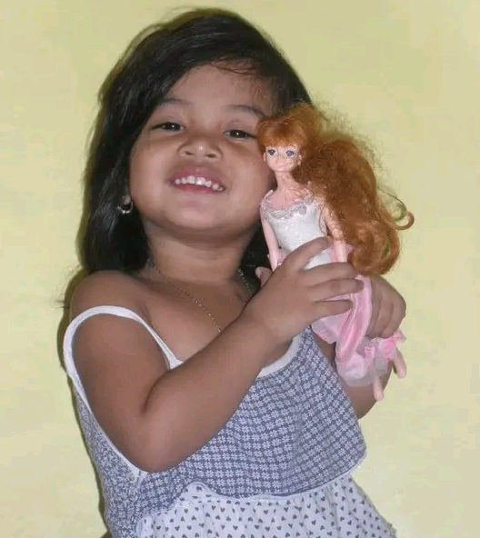
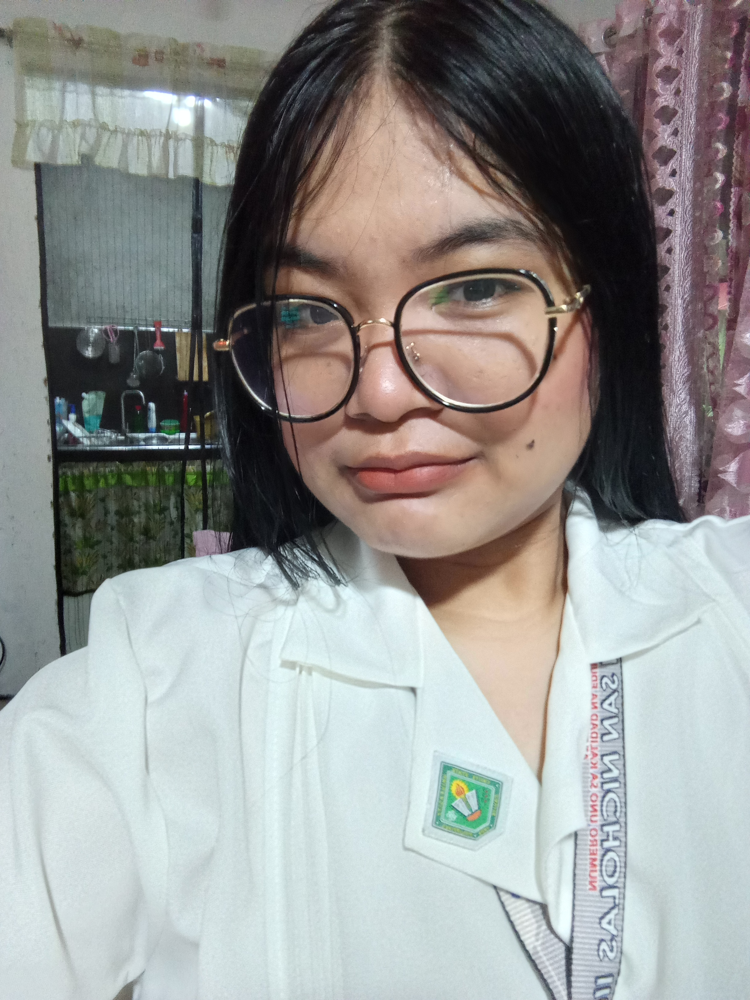
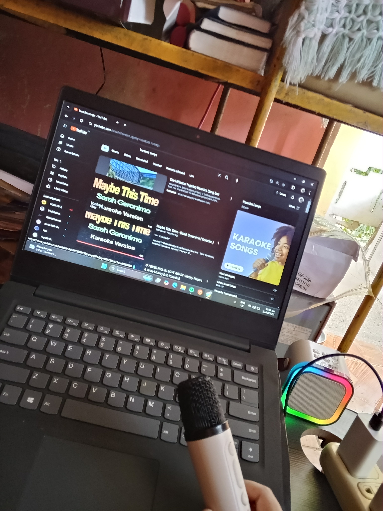
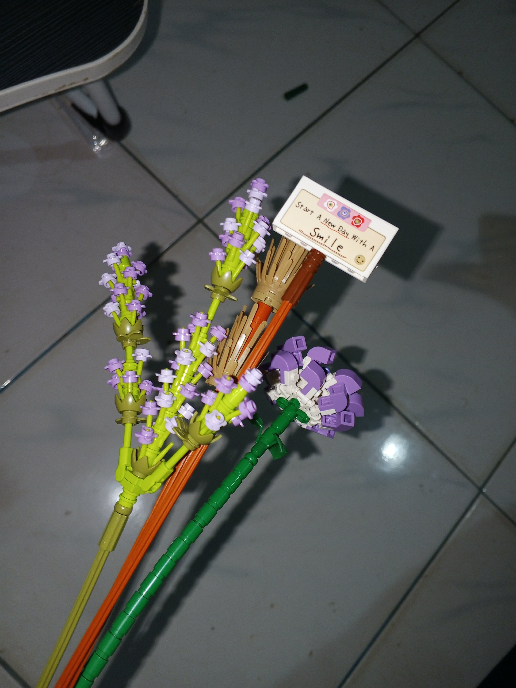
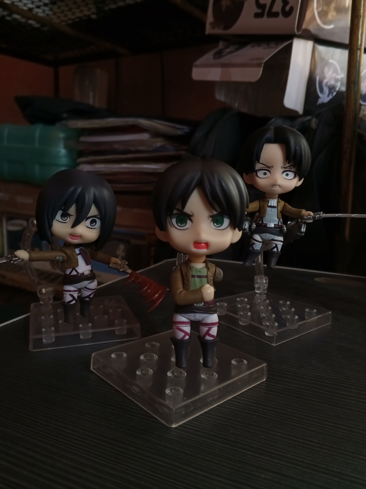
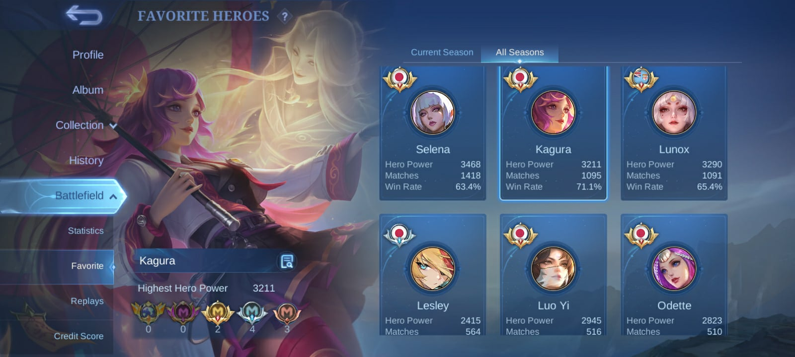

Hi everyone, I'm Cheney Hazel M. Gano. I'm 18 yrs old and I was born in Daegu, South Korea. I always love being alone and in peace. So I just always listen and reads a book instead of interacting with other peoples.

I was born in Daegu, South Korea. My mom said before that I'm a silly baby since I loved to cry. Also, I love to drink milk. I always cry when my milk is away from me.

When I was a kid, I always love to run and playing toys like dolls. My mom always buy me dolls when I'm a good girl as a reward.

As for now, I am at the serious point of my life and that I should focus in my academics for my future to have a stable work in the future.
These are my hobbies that I LOVE to do every day, especially when I'm feeling sad, bored, or down.
|
 SINGING |
 BUILDING LEGO |
 COLLECTING AOT STUFF |
||
|
 PLAYING MOBILE LEGENDS |
||||
With Honors and Special Award
Nursery
Preparatory
Grade 1-2 (2013-2015)
Grade 5 (2017-2018)
Grade 7 (2019-2020)
Grade 8 (2020-2021)
Grade 11 (2023-2024)
Grade 12 (2024-2025)
Won the "BIGSAYWIT" 1st runner up contest year 2018
Graduated at Gawaran Elementary School year 2019
Graduated at Eastern Bacoor National High School year 2022
Graduated at SHS in San Nicholas year 2025
Graduation Medal - Awarded for completing academic milestones with honors.
Achievement and Graduation Certificate - Given for participation and success in competitions or events.
Graduation Medal - Honoring completion of academic milestones with distinction.
Love begins at home. Here is my small but happy family: my dad Marciano D. Gano, my mom Edna M. Gano, and me, their only daughter Anica Hija.
My family was so perfect, full of laughter, warmth, and love—until my mom left us a year and a half ago. Losing her was one of the hardest experiences of my life, and for a time, it felt like the world had turned upside down.
Even in the midst of grief, life moves forward, and we must continue our journey. For now, I still have my dad. Though we don’t share many words or moments, I cherish the quiet connection we have and the comfort of his presence beside me. These little moments remind me of the importance of family and love, even when life feels incomplete.
Cherish your family while they are still here. Hug them, talk to them, forgive them, and let them know you care. Life is unpredictable, and we never know how long we will have with the people we love. I hope everyone who reads this finds the strength to heal from their own burdens and to value the love in their lives. With the guidance of Jesus, we can find peace, hope, and courage to keep moving forward.
Padayon.